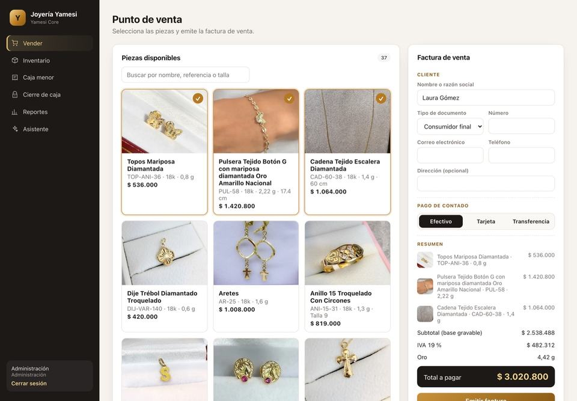
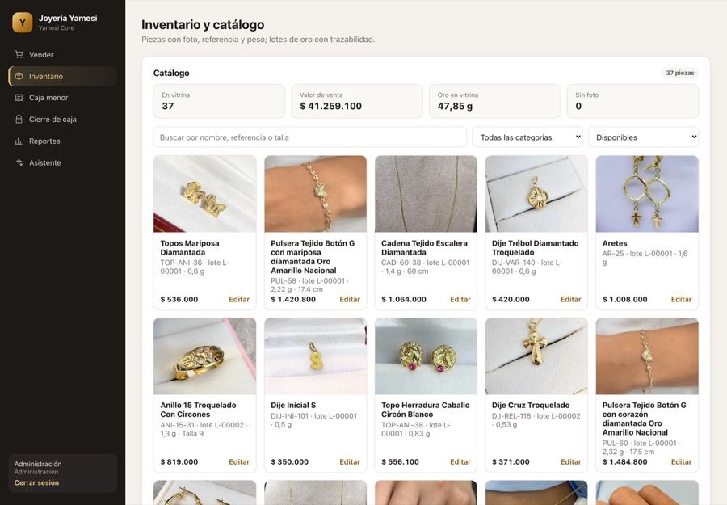
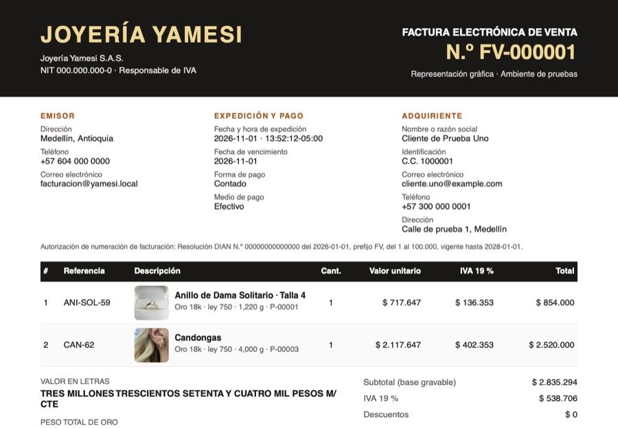
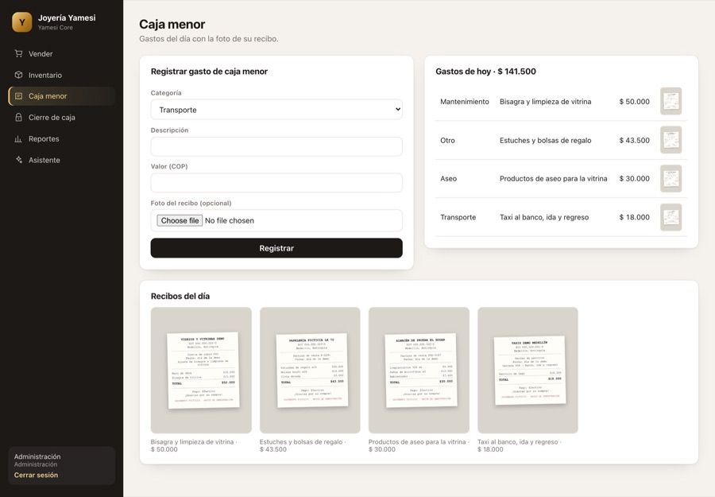
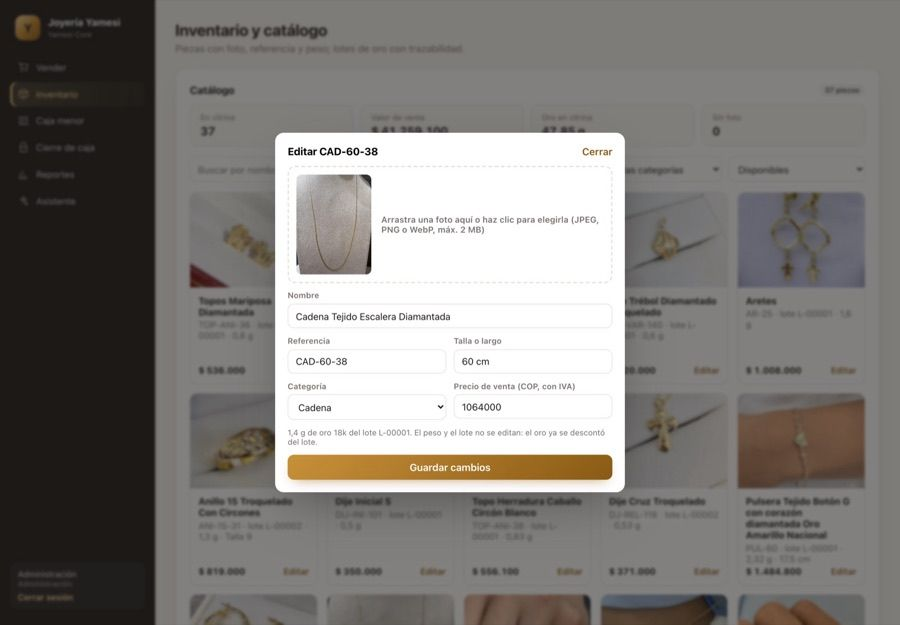
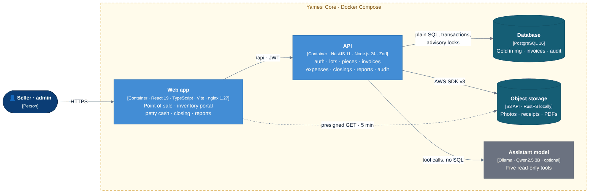
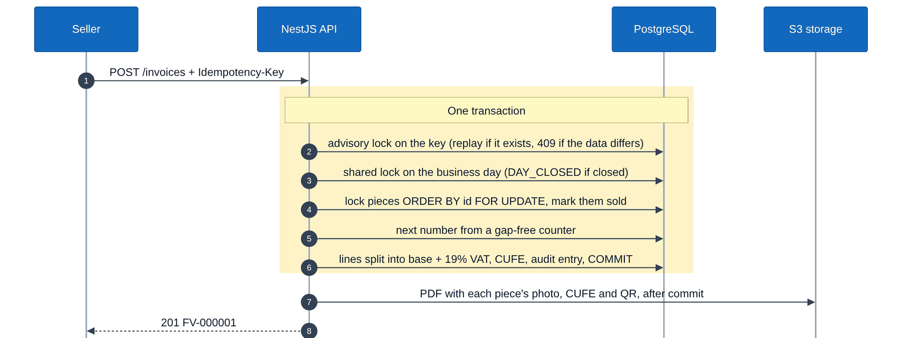

El problema
Una joyería funcionaba con Excel y recibos en papel. Necesitaba saber de qué compra de oro sale cada pieza, numerar facturas sin huecos, emitir la factura con todo lo que exige la normativa colombiana y cuadrar la caja todos los días.
Lo que construí
- Lotes de oro en miligramos enteros; cada pieza de 18k consume oro de su lote, que nunca puede quedar negativo.
- Factura de venta con identificación del comprador, IVA del 19 % por línea, rango de numeración DIAN, valor en letras, peso y ley del oro, garantía de por vida del oro, CUFE y QR.
- Caja menor con fotos de recibos en S3, cierre diario que bloquea el día, márgenes congelados al vender y registro de auditoría.
- Un portal de inventario: buscar en el catálogo, editar una pieza en stock y cambiar su foto; cada cambio queda auditado y las piezas vendidas no se modifican.





Cómo está hecho


- Frontend
- React 19
- TypeScript
- Vite 8
- Backend
- Node.js 24
- NestJS 11
- Zod 4
- JWT
- bcrypt
- PDFKit
- qrcode
- Datos y almacenamiento
- PostgreSQL 16
- plain SQL migrations
- S3 · AWS SDK v3
- RustFS (local S3)
- Infraestructura y DevOps
- Docker
- Docker Compose
- nginx (unprivileged)
- non-root containers
- AWS EC2 + S3 (real system)
- CI/CD y calidad
- GitHub Actions
- Jest
- Supertest
- 74 tests
- Dependabot
- Seguridad
- CodeQL
- Gitleaks
- npm audit
- Trivy
- OWASP ZAP (DAST)
- Content-Security-Policy
- Helmet
- login lockout
- image metadata check
- IA (opcional)
- Ollama
- Qwen2.5 3B
- tool calling
Decisiones y concesiones
Un contador, no una secuencia
Una SEQUENCE de PostgreSQL deja huecos cuando hay rollback. El contador se incrementa dentro de la transacción de la factura, así que una venta fallida devuelve su número. La concesión es que las facturas se serializan en una fila, aceptable al volumen de una tienda.
El precio incluye IVA y la factura lo separa
En Colombia el precio al público incluye IVA. Cada línea se separa en base e IVA en pesos enteros y una restricción en la base de datos garantiza base + IVA = precio. Los márgenes usan el ingreso sin IVA.
El cierre toma un bloqueo exclusivo
Ventas y gastos toman un bloqueo compartido sobre su día; el cierre toma uno exclusivo, así que nada se cuela mientras se calculan los totales. Después, cualquier escritura de ese día recibe DAY_CLOSED.
Cómo se comprobó
| Pruebas unitarias y de integración | 74 aprobadas en CI |
|---|---|
| CUFE contra el ejemplo oficial de la DIAN | Hash idéntico |
| Ventas simultáneas de una pieza | Una venta y un PIECE_NOT_AVAILABLE |
| Análisis estático y secretos | CodeQL y Gitleaks en verde |
| Escaneo de imágenes y DAST | Trivy: 0 CVE críticas o altas corregibles; ZAP: sin alertas no aceptadas |
| Evaluación de seguridad | Las fotos conservaban el GPS y el vendedor veía costos: encontrado, corregido y probado en CI |
- 74 pruebas automatizadas, 2 contra un servidor compatible con S3
- 8 facturas simultáneas reciben los números 1 a 8, sin huecos
- Un día de negocio simulado (make demo): llegadas con foto, 5 ventas, 4 recibos y cierre
Alcance y próximos pasos
- Esta versión pública no transmite facturas a la DIAN: genera el PDF con CUFE y QR como demostración. El sistema real de la joyería sí las transmite.
- Está pensado para una sola tienda, como el negocio real. Un día cerrado no se reabre: es una regla de control para que las cifras ya cuadradas no cambien.
- Al subir una foto nueva en el portal, reemplaza a la anterior en el catálogo. Próximo paso: borrar automáticamente del almacenamiento los archivos que ya no se usan.